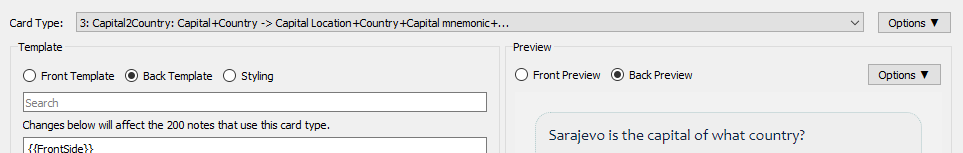

SmarterTypeField
Flexible matching for {{type:}} field

⏬🔽⏬

Adds three options to the {{type:}} field in Anki:
ignore_casemakes the type field ignore case when checking the answer.ignore_accentsallows the type field to disregard accents when checking the answer.ignore_punctuationsmakes the type field ignore punctuation marks when checking the answer.
The options can be used together or separately.
Installation
-
Automatic install
Simply install the addon on your AnkiDesktop. The changes made by the addon will apply to both AnkiDesktop and AnkiDroid.
-
Manual install
Simply add this line to the Back Template of your Anki Cards.
<script src="https://derdemystifier.github.io/SmarterTypeField/smarterTypeField.min.js"></script>
FAQ
I want this to work even when I don't have Internet Access.
If you install the addon. This will apply even when you don't have Internet access. But it won't if you chose manual install; Since the script tag above fetches the script, you need Internet. If that's not always available, then:
- Copy the content of the file
smarterTypeField.min.js.- Paste it in the Back Template of your Anki card like so:
<script> (()=>{"use strict";!function() ....etc..... </script>
What the Heck is the “Back Template” of my Anki Cards?
The Back Template is the other side of the flashcard, it's the code that's rendered when you show the answer. 
How do I get to this “Back Template”?
- Click
Toolsin the Anki Toolbar.- Select the Card that has the
{{type:}}fields.- Click
Cardsbutton on the right.- TA DAAAAAA!
How does this work?
As you would think, simply compares your input with the answer without matching case. So ANKI ↔ Anki. Technically speaking, it injects a script tag to your card templates that have a {{type:}} field. It doesn't touch any existing code in the template. The script enables the addon to work both on AnkiDesktop and AnkiDroid.
How to uninstall?
Go to Addons->SmarterTypeField->Config and change "enabled" with false, then restart Anki. That's it! You can then delete the addon if you wish by hitting the uninstall button.
Does this work in Anki Version 2.x.xx
I've tested on Anki Version 2.1.48. I would assume it to be working in later versions as well. If not, please open a support ticket above, labeled Issues.